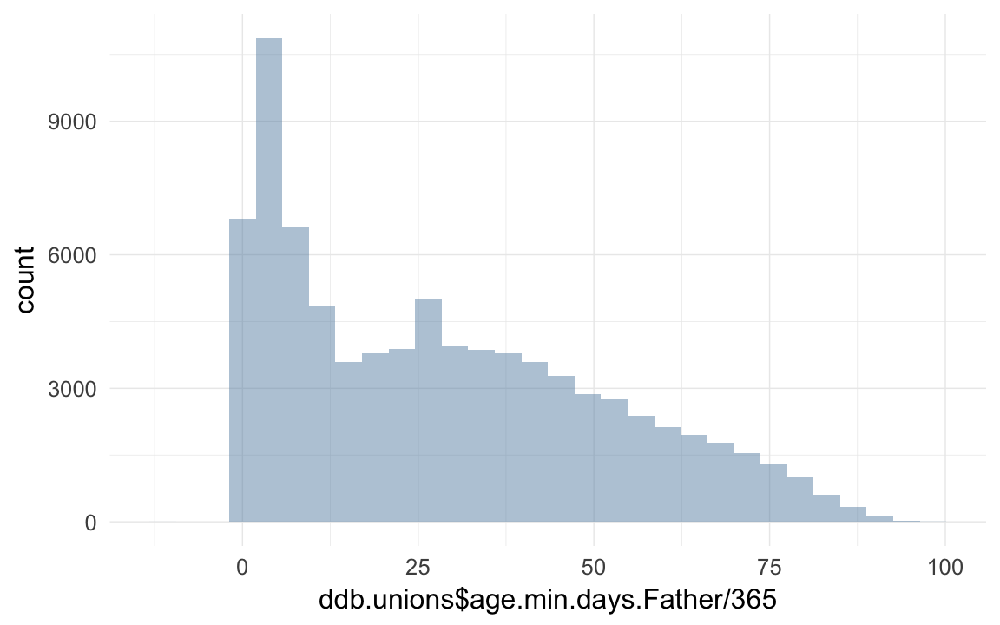
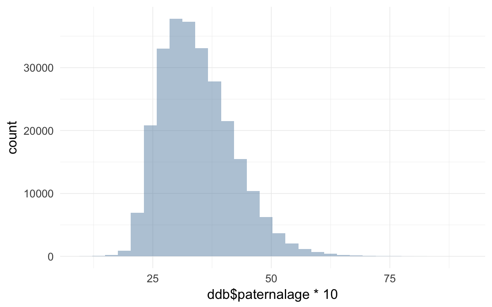
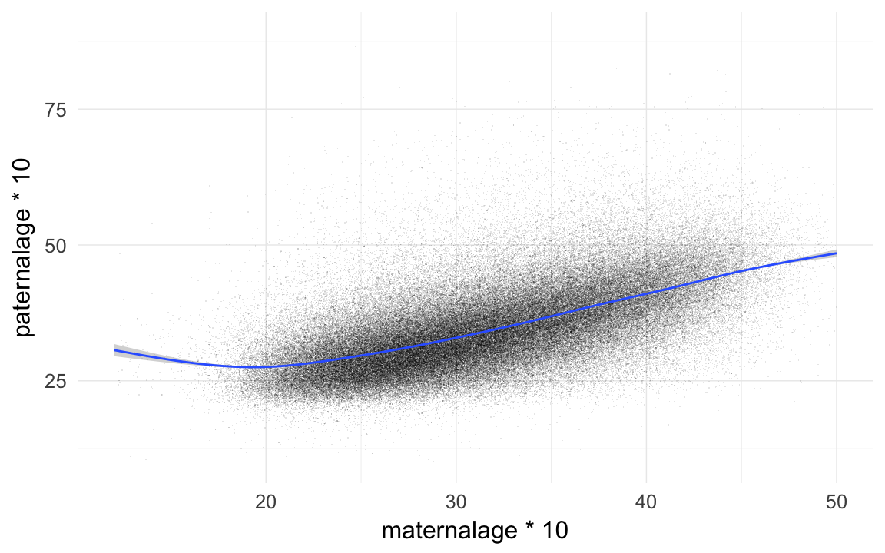

DDB data wrangling
description of data
This data retrieval is a modification of a previous dataset delivered to Kai Willführ in 2012 with contract number K12019. The basic changes from the previous dataset is that all couples are included in the couples file (previously called parents) while only couples with children were included in the earlier data. There are also more parishes included – 12 parishes in the Linköping region (this region was not included in the 2012 dataset) and a couple of new parishes in the Skellefteå region. The Sundsvall region and Northern inland region cover the same parishes as before.
There are also a couple of changes in the Popum database at DDB that results in some differences between the two datasets. The Skellefteå region is now completely linked between parishes in the region, meaning that one individual has the same identity in all parishes he or she has been present in. The other regions are however unlinked or not completely linked, which means that there are separate records in each parish of presence. Another difference is that the death codes have now been updated and conforms to the official DDB classification (representing an historical adaptation of ICD10). The presence periods are furthermore better represented in the new version.
loading details
library(foreign); library(Hmisc); library(car); library(psych); library(QuantPsyc); library(ggplot2); library(lubridate); library(stringr); library(reshape2); library(plyr); library(knitr); library(formr); library(data.table)
opts_chunk$set(cache=TRUE,tidy=FALSE,autodep=TRUE,dev=c('png','pdf'),fig.width=12,fig.height=7.5,out.width='1440px',out.height='900px')
opts_knit$set(self.contained=F)
source("0__helpers.R")Transforming data
ddb.individuals = read.csv2("data/DDB Sweden/march2015/Children.csv",fileEncoding="latin1")
ddb.unions = read.csv2("data/DDB Sweden/march2015/Couples.csv",fileEncoding="latin1")
names(ddb.individuals) = tolower(names(ddb.individuals))
names(ddb.unions) = tolower(names(ddb.unions))
length(intersect(ddb.individuals$idPere, ddb.individuals$idIndividu))## [1] 0length(intersect(ddb.individuals$id_m, ddb.individuals$id))## [1] 21849ddb.unions = data.table(ddb.unions)
ddb.individuals = data.table(ddb.individuals)
table(duplicated(ddb.individuals$id))##
## FALSE TRUE
## 258515 12744ddb.individuals[, idIndividu := str_c(prefix,".",id)]
table(duplicated(ddb.individuals$idIndividu))##
## FALSE
## 271259ddb.individuals[, idPere := ifelse(is.na(id_m), NA, str_c(prefix,".",id_m))]
ddb.individuals[, idMere := ifelse(is.na(id_f), NA, str_c(prefix,".",id_f))]
ddb.unions[, idPere := ifelse(is.na(id_m), NA, str_c(prefix,".",id_m))]
ddb.unions[, idMere := ifelse(is.na(id_f), NA, str_c(prefix,".",id_f))]
ddb.unions = ddb.unions[idMere != intersect(ddb.unions$idMere, ddb.unions$idPere), ]
# setnames(ddb.individuals, c( "id_m", "id_f"),
# c("idPere", "idMere"))
# setnames(ddb.unions, c( "id_m", "id_f"),
# c( "idPere", "idMere"))
ddb.individuals[, idParents := ifelse(is.na(idMere) & is.na(idPere), NA, str_c(idMere, "_", idPere))]
ddb.unions[, idParents := ifelse(is.na(idMere) & is.na(idPere), NA, str_c(idMere, "_", idPere))]
ddb = ddb.individuals
ddb[, male := Recode(gender,"1=1;2=0;0=NA")]
library(lubridate)do the kids
# xx = count(ddb$enddate_s); head(xx[rev(order(xx$freq)),])
ddb[, birth_date_s := ifelse(birth_date_s %in% c("0",""), NA, birth_date_s)]
ddb[, birth_date_c := ifelse(birth_date_c %in% c("0",""), NA, birth_date_c)]
ddb[, death_date_s := ifelse(death_date_s %in% c("0",""), NA, death_date_s)]
ddb[, death_date_c := ifelse(death_date_c %in% c("0",""), NA, death_date_c)]
ddb[, startdate_s := ifelse(startdate_s %in% c("0",""), NA, startdate_s)]
ddb[, startdate_c := ifelse(startdate_c %in% c("0",""), NA, startdate_c)]
ddb[, enddate_s := ifelse(enddate_s %in% c("0",""), NA, enddate_s)]
ddb[, enddate_c := ifelse(enddate_c %in% c("0",""), NA, enddate_c)]
ddb[, bdate := as.Date(dmy(ifelse(!is.na(birth_date_c), birth_date_c, birth_date_s) )) ] # use the calculated bdate if a proper one is missing
ddb[, byear := year(bdate) ]
ddb[, ddate := as.Date(dmy(ifelse(!is.na(death_date_c), death_date_c, death_date_s))) ]
ddb[, dyear := year(ddate) ]
ddb[, startdate := as.Date(dmy(ifelse(!is.na(startdate_c), startdate_c, startdate_s))) ]
ddb[, enddate := as.Date(dmy(ifelse(!is.na(enddate_c), enddate_c, enddate_s))) ]
ddb[, age.days := as.numeric(ddate - bdate) ]
ddb[ age.days < 0 & age.days > -365, age.days := 0]
ddb[ age.days < 0 , age.days := NA]
ddb[, age.min.days := as.numeric(enddate - startdate) ]
qplot(ddb$age.min.days / 365)## stat_bin: binwidth defaulted to range/30. Use 'binwidth = x' to adjust this.ddb[ age.min.days < 0 & age.min.days > -365, age.min.days := 0]
ddb[ age.min.days < 0 , age.min.days := NA]
qplot(ddb$age.min.days/365,ddb$age.days /365)## Warning: Removed 206308 rows containing missing values (geom_point).ddb[!is.na(age.days), age.min.days := age.days ]
props(~ is.na(age.days) + is.na(age.min.days), data = ddb)## is.na(age.min.days)
## is.na(age.days) FALSE TRUE
## FALSE 0.289 0.000
## TRUE 0.689 0.022ddb$age.min = ddb$age.min.days / 365/10
ddb$age = ddb$age.days / 365/10
qplot(ddb$age * 10)## stat_bin: binwidth defaulted to range/30. Use 'binwidth = x' to adjust this.qplot(ddb$age.min * 10)## stat_bin: binwidth defaulted to range/30. Use 'binwidth = x' to adjust this.
do the mothers
ddb.unions[, f_birth_date_s := ifelse(f_birth_date_s %in% c("0",""), NA, f_birth_date_s)]
ddb.unions[, f_birth_date_c := ifelse(f_birth_date_c %in% c("0",""), NA, f_birth_date_c)]
ddb.unions[, f_death_date_s := ifelse(f_death_date_s %in% c("0",""), NA, f_death_date_s)]
ddb.unions[, f_death_date_c := ifelse(f_death_date_c %in% c("0",""), NA, f_death_date_c)]
ddb.unions[, f_startdate_s := ifelse(f_startdate_s %in% c("0",""), NA, f_startdate_s)]
ddb.unions[, f_startdate_c := ifelse(f_startdate_c %in% c("0",""), NA, f_startdate_c)]
ddb.unions[, f_enddate_s := ifelse(f_enddate_s %in% c("0",""), NA, f_enddate_s)]
ddb.unions[, f_enddate_c := ifelse(f_enddate_c %in% c("0",""), NA, f_enddate_c)]
ddb.unions[, bdate.Mother := as.Date(dmy(ifelse(!is.na(f_birth_date_c), f_birth_date_c, f_birth_date_s) )) ] # use the calculated bdate if a proper one is missing
ddb.unions[, byear.Mother := year(bdate.Mother) ]
ddb.unions[, ddate.Mother := as.Date(dmy(ifelse(!is.na(f_death_date_c), f_death_date_c, f_death_date_s))) ]
ddb.unions[, dyear.Mother := year(ddate.Mother) ]
ddb.unions[, startdate.Mother := as.Date(dmy(ifelse(!is.na(f_startdate_c), f_startdate_c, f_startdate_s))) ]
ddb.unions[, enddate.Mother := as.Date(dmy(ifelse(!is.na(f_enddate_c), f_enddate_c, f_enddate_s))) ]
ddb.unions[, age.days.Mother := as.numeric(ddate.Mother - bdate.Mother) ]
ddb.unions[ age.days.Mother < 0 & age.days.Mother > -365, age.days.Mother := 0]
ddb.unions[ age.days.Mother < 0 , age.days.Mother := NA]
ddb.unions[, age.min.days.Mother := as.numeric(enddate.Mother - startdate.Mother) ]
qplot(ddb.unions$age.min.days.Mother / 365)## stat_bin: binwidth defaulted to range/30. Use 'binwidth = x' to adjust this.
ddb.unions[ age.min.days.Mother < 0 & age.min.days.Mother > -365, age.min.days.Mother := 0]
ddb.unions[ age.min.days.Mother < 0 , age.min.days.Mother := NA]
qplot(ddb.unions$age.min.days.Mother/365,ddb.unions$age.days.Mother /365)## Warning: Removed 71840 rows containing missing values (geom_point).ddb.unions[!is.na(age.days.Mother), age.min.days.Mother := age.days.Mother ]
props(~ is.na(age.days.Mother) + is.na(age.min.days.Mother), data = ddb.unions)## is.na(age.min.days.Mother)
## is.na(age.days.Mother) FALSE TRUE
## FALSE 0.287 0.000
## TRUE 0.651 0.063ddb.unions$age.min.Mother = ddb.unions$age.min.days.Mother / 365/10
ddb.unions$age.Mother = ddb.unions$age.days.Mother / 365/10
qplot(ddb.unions$age.Mother * 10)## stat_bin: binwidth defaulted to range/30. Use 'binwidth = x' to adjust this.
qplot(ddb.unions$age.min.Mother * 10)## stat_bin: binwidth defaulted to range/30. Use 'binwidth = x' to adjust this.do the fathers
ddb.unions[, m_birth_date_s := ifelse(m_birth_date_s %in% c("0",""), NA, m_birth_date_s)]
ddb.unions[, m_birth_date_c := ifelse(m_birth_date_c %in% c("0",""), NA, m_birth_date_c)]
ddb.unions[, m_death_date_s := ifelse(m_death_date_s %in% c("0",""), NA, m_death_date_s)]
ddb.unions[, m_death_date_c := ifelse(m_death_date_c %in% c("0",""), NA, m_death_date_c)]
ddb.unions[, m_startdate_s := ifelse(m_startdate_s %in% c("0",""), NA, m_startdate_s)]
ddb.unions[, m_startdate_c := ifelse(m_startdate_c %in% c("0",""), NA, m_startdate_c)]
ddb.unions[, m_enddate_s := ifelse(m_enddate_s %in% c("0",""), NA, m_enddate_s)]
ddb.unions[, m_enddate_c := ifelse(m_enddate_c %in% c("0",""), NA, m_enddate_c)]
ddb.unions[, bdate.Father := as.Date(dmy(ifelse(!is.na(m_birth_date_c), m_birth_date_c, m_birth_date_s) )) ] # use the calculated bdate if a proper one is missing
ddb.unions[, byear.Father := year(bdate.Father) ]
ddb.unions[, ddate.Father := as.Date(dmy(ifelse(!is.na(m_death_date_c), m_death_date_c, m_death_date_s))) ]
ddb.unions[, dyear.Father := year(ddate.Father) ]
ddb.unions[, startdate.Father := as.Date(dmy(ifelse(!is.na(m_startdate_c), m_startdate_c, m_startdate_s))) ]
ddb.unions[, enddate.Father := as.Date(dmy(ifelse(!is.na(m_enddate_c), m_enddate_c, m_enddate_s))) ]
ddb.unions[, age.days.Father := as.numeric(ddate.Father - bdate.Father) ]
ddb.unions[ age.days.Father < 0 & age.days.Father > -365, age.days.Father := 0]
ddb.unions[ age.days.Father < 0 , age.days.Father := NA]
ddb.unions[, age.min.days.Father := as.numeric(enddate.Father - startdate.Father) ]
qplot(ddb.unions$age.min.days.Father / 365)## stat_bin: binwidth defaulted to range/30. Use 'binwidth = x' to adjust this.
ddb.unions[ age.min.days.Father < 0 & age.min.days.Father > -365, age.min.days.Father := 0]
ddb.unions[ age.min.days.Father < 0 , age.min.days.Father := NA]
qplot(ddb.unions$age.min.days.Father/365,ddb.unions$age.days.Father /365)## Warning: Removed 72327 rows containing missing values (geom_point).
ddb.unions[!is.na(age.days.Father), age.min.days.Father := age.days.Father ]
props(~ is.na(age.days.Father) + is.na(age.min.days.Father), data = ddb.unions)## is.na(age.min.days.Father)
## is.na(age.days.Father) FALSE TRUE
## FALSE 0.28 0.00
## TRUE 0.54 0.18ddb.unions$age.min.Father = ddb.unions$age.min.days.Father / 365/10
ddb.unions$age.Father = ddb.unions$age.days.Father / 365/10
qplot(ddb.unions$age.Father * 10)## stat_bin: binwidth defaulted to range/30. Use 'binwidth = x' to adjust this.
qplot(ddb.unions$age.min.Father * 10)## stat_bin: binwidth defaulted to range/30. Use 'binwidth = x' to adjust this.
unite unions and individuals
parents = ddb.unions[, list(idParents, bdate.Father, byear.Father, ddate.Father, dyear.Father, startdate.Father, enddate.Father, bdate.Mother, byear.Mother, ddate.Mother, dyear.Mother, startdate.Mother, enddate.Mother, age.Mother, age.Father, age.min.Mother, age.min.Father)]
ddb = merge(ddb, parents, by = "idParents", all.x = T, suffixes = c("",".mieux"))
ddb$paternalage = as.numeric(ddb$bdate - ddb$bdate.Father)/365/10
ddb[paternalage <= 1 | paternalage > 9, paternalage := NA]
qplot(ddb$paternalage *10)## stat_bin: binwidth defaulted to range/30. Use 'binwidth = x' to adjust this.
head(sort(ddb$paternalage *10),20)## [1] 10 10 11 11 11 11 11 11 12 12 12 12 12 12 12 12 12 12 12 12tail(sort(ddb$paternalage *10),20)## [1] 77 77 77 78 78 78 79 79 79 79 80 80 81 82 82 82 82 82 87 89ddb$maternalage = as.numeric(ddb$bdate - ddb$bdate.Mother)/365/10
qplot(ddb$maternalage *10)## stat_bin: binwidth defaulted to range/30. Use 'binwidth = x' to adjust this.table(ddb$age.Mother < (ddb$maternalage - 0.1)) # zombie moms##
## FALSE TRUE
## 90698 44table(ddb$age.Father < (ddb$paternalage - 0.1)) # zombie dads##
## FALSE TRUE
## 94819 86# remove zombies!
ddb = ddb[is.na(maternalage) | is.na(age.Mother) | age.Mother >= (maternalage - 0.1) , ]
ddb = ddb[is.na(paternalage) | is.na(age.Father) | age.Father >= (paternalage - 0.1) , ]
head(sort(ddb$maternalage *10),20)## [1] -40.20 -25.02 -23.02 -5.75 -3.26 -2.05 -2.00 -1.76 -0.77 1.26
## [11] 4.49 4.97 5.45 5.50 5.90 5.96 6.19 6.70 7.13 7.17tail(sort(ddb$maternalage *10),40) # but 69y old. something wrong with that.## [1] 56 56 56 56 56 56 56 57 57 57 57 58 58 58 58 59 59 59 59 59 59 60 60
## [24] 60 60 61 61 61 62 62 62 62 63 63 63 64 64 65 67 68ddb[maternalage < 1.0 | maternalage >= 6, maternalage := NA ]
qplot(maternalage*10,paternalage*10,data=ddb,geom="jitter",alpha=I(0.1),shape=I(".")) + xlim(12,50) + geom_smooth()## geom_smooth: method="auto" and size of largest group is >=1000, so using gam with formula: y ~ s(x, bs = "cs"). Use 'method = x' to change the smoothing method.## Warning: Removed 11954 rows containing missing values (stat_smooth).## Warning: Removed 11954 rows containing missing values (geom_point).
cor.test(ddb$maternalage,ddb$paternalage)##
## Pearson's product-moment correlation
##
## data: ddb$maternalage and ddb$paternalage
## t = 387, df = 259337, p-value < 2.2e-16
## alternative hypothesis: true correlation is not equal to 0
## 95 percent confidence interval:
## 0.60 0.61
## sample estimates:
## cor
## 0.61xtabs(~ is.na(idMere) + is.na(idPere), data = ddb)## is.na(idPere)
## is.na(idMere) FALSE TRUE
## FALSE 261198 9931count kids and spouses
# tail(ddb.unions) # already sorted by date
ddb.unions = ddb.unions[order(ddb.unions$idPere,ddb.unions$marr_date_s),]
ddb.unions$marriage.order.Father = ave(rep(NA, nrow(ddb.unions)), ddb.unions$idPere, FUN = seq_along)
ddb.unions = ddb.unions[order(ddb.unions$idMere,ddb.unions$marr_date_s),]
ddb.unions$marriage.order.Mother = ave(rep(NA, nrow(ddb.unions)), ddb.unions$idMere, FUN = seq_along)
ddb = merge(ddb, ddb.unions[,list(idParents,marriage.order.Mother,marriage.order.Father),],by="idParents",all.x=T)
ddb$first.marriage = (ddb$marriage.order.Mother + ddb$marriage.order.Father) == 2
table(ddb$first.marriage,exclude=NULL)##
## FALSE TRUE <NA>
## 31521 229677 9931count_spouses = function(df, df2, what, wt_var) {
df = data.frame(df)
df2 = data.frame(df2)
counted.husband = dcast(data= df2[,c('idPere',wt_var)],formula = idPere ~ .,fun.aggregate = sum, na.rm=T, value.var = wt_var)
counted.wive = dcast(data= df2[,c('idMere',wt_var)],formula = idMere ~ .,fun.aggregate = sum, na.rm=T, value.var = wt_var)
names(counted.husband) = names(counted.wive) = c('idIndividu',what)
counted = rbind(counted.husband,counted.wive)
df = merge(df,counted,by='idIndividu',all.x=T)
df[,what] = Recode(df[,what],'NA=0')
data.table(df)
}
ddb$born = 1; ddb.unions$born = 1
ddb = count_spouses(ddb,ddb.unions, 'spouses', "born")
ddb$survive1d = ifelse(ddb$age.min.days > 1, 1, 0)
crosstabs(data=ddb, ~ survive1d + stillborn)## stillborn
## survive1d 0 1
## 0 2364 5067
## 1 257843 0
## <NA> 5855 0ddb$survive1m = ifelse(ddb$age.min.days > 28, 1, 0)
ddb$dead1m = ifelse(ddb$age.min.days > 28, 0, 1)
ddb$dead1y = ifelse(ddb$age.min > 0.1, 0, 1)
ddb$dead5y = ifelse(ddb$age.min > 0.5, 0, 1)
ddb$deadR = ifelse(ddb$age.min > 1.5, 0, 1)
ddb[, survive1y := ifelse(age.min > 0.1, 1, ifelse(age > 0.1, 1, 0))]
ddb[, survive5y := ifelse(age.min > 0.5, 1, ifelse(age > 0.5, 1, 0))]
ddb[, surviveR := ifelse(age.min > 1.5, 1, ifelse(age > 1.5, 1, 0))]
table(ddb$survive1m,exclude=NULL)##
## 0 1 <NA>
## 14821 250453 5855ddb = count_and_merge(ddb, 'children', wt_var = "born")
ddb[is.na(survive1d), survive1d := ifelse(spouses > 0 | children > 0, 1, NA)]
ddb[is.na(survive1y), survive1y := ifelse(spouses > 0 | children > 0, 1, NA)]
ddb[is.na(survive5y), survive5y := ifelse(spouses > 0 | children > 0, 1, NA)]
ddb[is.na(surviveR), surviveR := ifelse(spouses > 0 | children > 0, 1, NA)]
qplot(ddb$children,binwidth=1)
ddb$children.per.spouse = ddb$children/ddb$spouses
ddb$children.per.spouse[which(ddb$spouses==0)] = NA
qplot(ddb$children.per.spouse)## stat_bin: binwidth defaulted to range/30. Use 'binwidth = x' to adjust this.
ddb = count_and_merge(ddb, 'children.stillborn', wt_var = 'stillborn')
ddb = count_and_merge(ddb, 'children.surviving1d', wt_var = 'survive1d')
ddb = count_and_merge(ddb, 'children.surviving1m', wt_var = 'survive1m')
ddb = count_and_merge(ddb, 'children.surviving1y', wt_var = 'survive1y')
ddb = count_and_merge(ddb, 'children.surviving5y', wt_var = 'survive5y')
ddb = count_and_merge(ddb, 'children.survivingR', wt_var = 'surviveR')
ddb = count_and_merge(ddb, 'children.dead1m', wt_var = 'dead1m')
ddb = count_and_merge(ddb, 'children.dead1y', wt_var = 'dead1y')
ddb = count_and_merge(ddb, 'children.dead5y', wt_var = 'dead5y')
ddb = count_and_merge(ddb, 'children.deadR', wt_var = 'deadR')
ddb = count_and_merge(ddb, 'children.spouses', wt_var = 'spouses')
ddb = count_and_merge(ddb, 'grandchildren.per.spouse', wt_var = 'children.per.spouse')
ddb = count_and_merge(ddb, 'grandchildren',wt_var='children')
ddb = count_and_merge(ddb, 'grandchildren.surviving1d', wt_var = 'children.surviving1d')
ddb = count_and_merge(ddb, 'grandchildren.surviving1m', wt_var = 'children.surviving1m')
ddb = count_and_merge(ddb, 'grandchildren.surviving1y', wt_var = 'children.surviving1y')
ddb = count_and_merge(ddb, 'grandchildren.surviving5y', wt_var = 'children.surviving5y')
ddb = count_and_merge(ddb, 'grandchildren.survivingR', wt_var = 'children.survivingR')
ddb = count_and_merge(ddb, 'grandchildren.dead1m', wt_var = 'children.dead1m')
xtabs(~ (grandchildren>0) +(children>0) + (spouses>0) + surviveR,data=ddb,exclude=NULL, na.action= na.pass)## , , spouses > 0 = FALSE, surviveR = 0
##
## children > 0
## grandchildren > 0 FALSE TRUE
## FALSE 57199 0
## TRUE 0 0
##
## , , spouses > 0 = TRUE, surviveR = 0
##
## children > 0
## grandchildren > 0 FALSE TRUE
## FALSE 1 0
## TRUE 0 0
##
## , , spouses > 0 = FALSE, surviveR = 1
##
## children > 0
## grandchildren > 0 FALSE TRUE
## FALSE 55283 0
## TRUE 0 0
##
## , , spouses > 0 = TRUE, surviveR = 1
##
## children > 0
## grandchildren > 0 FALSE TRUE
## FALSE 9224 28416
## TRUE 0 13408
##
## , , spouses > 0 = FALSE, surviveR = NA
##
## children > 0
## grandchildren > 0 FALSE TRUE
## FALSE 107598 0
## TRUE 0 0
##
## , , spouses > 0 = TRUE, surviveR = NA
##
## children > 0
## grandchildren > 0 FALSE TRUE
## FALSE 0 0
## TRUE 0 0counted.parents = dcast(data= ddb[,list(idParents,born)],formula = idParents ~ .,fun.aggregate = sum, na.rm=T, value.var = "born")
names(counted.parents) = c('idParents',"children")
ddb.unions = merge(ddb.unions, counted.parents,by="idParents",all.x=T) # find childless marriages
table(ddb.unions$children,exclude=NULL)##
## 1 2 3 4 5 6 7 8 9 10 11 12
## 19498 13372 10611 8528 6685 5189 3927 2946 1929 1170 620 315
## 13 14 15 16 17 18 19 21 <NA>
## 138 65 37 14 6 1 2 1 25453ddb.unions = ddb.unions[children > 0, ]
ddb.unions = ddb.unions[order(id_m,marr_date_s),]
ddb.unions$fertile.marriage.order.Father = ave(rep(NA, nrow(ddb.unions)), ddb.unions$id_m, FUN = seq_along)
ddb.unions = ddb.unions[order(id_f,marr_date_s),]
ddb.unions$fertile.marriage.order.Mother = ave(rep(NA, nrow(ddb.unions)), ddb.unions$id_f, FUN = seq_along)
ddb = merge(ddb, ddb.unions[,list(idParents,fertile.marriage.order.Mother,fertile.marriage.order.Father),],by="idParents",all.x=T)
ddb$first.fertile.marriage = (ddb$fertile.marriage.order.Mother + ddb$fertile.marriage.order.Father) == 2
table(ddb$first.fertile.marriage,exclude=NULL)##
## FALSE TRUE <NA>
## 48423 212775 9931qplot(ddb[spouses>0,]$children, binwidth=1)
qplot(ddb$grandchildren)## stat_bin: binwidth defaulted to range/30. Use 'binwidth = x' to adjust this.
qplot(ddb[children>0,]$grandchildren )## stat_bin: binwidth defaulted to range/30. Use 'binwidth = x' to adjust this.
qplot(ddb[children > 0, ]$children.surviving1m)## stat_bin: binwidth defaulted to range/30. Use 'binwidth = x' to adjust this.
qplot(ddb$spouses)## stat_bin: binwidth defaulted to range/30. Use 'binwidth = x' to adjust this.
qplot(children,children.surviving1m, data=ddb,geom="jitter",alpha=I(0.02))
ddb %>% group_by(region) %>%
summarise(
surviveR_min = mean(surviveR,na.rm=T),
# min_N = sum(!is.na(age.min)),
surviveR = mean(age > 1.5,na.rm=T),
# age_N = sum(!is.na(age)),
# prop_unknown = sum(endtype==0)/sum(!is.na(endtype)),
# prop_staid = sum(endtype==1)/sum(!is.na(endtype)),
prop_dead = sum(endtype==2)/sum(!is.na(endtype)),
prop_migrated = sum(endtype==3)/sum(!is.na(endtype)),
# nm_prop_unknown = sum(endtype==0)/sum(endtype!=3),
nm_prop_surviveR = sum(age > 1.5,na.rm=T)/sum(endtype!=3 & !is.na(age)),
nm_prop_surviveR_m = sum(age.min > 1.5,na.rm=T)/sum(endtype!=3 & !is.na(age.min)),
# nm_prop_staid = sum(endtype==1)/sum(endtype!=3),
nm_prop_dead = sum(endtype==2)/sum(endtype!=3)
)## Source: local data table [4 x 8]
##
## region surviveR_min surviveR prop_dead prop_migrated
## 1 Sundsvallsregionen 0.61 0.20 0.21 0.33
## 2 Linköpingsregionen 0.64 0.22 0.20 0.59
## 3 Skellefteåregionen 0.72 0.34 0.25 0.15
## 4 Norra inlandsregionen 0.65 0.34 0.29 0.13
## Variables not shown: nm_prop_surviveR (dbl), nm_prop_surviveR_m (dbl),
## nm_prop_dead (dbl)pre-calculate some predictors
ddb = ddb[order(ddb$idPere,ddb$bdate), ]
ddb <- transform(ddb, siblings = ave(rep(NA, nrow(ddb)), ddb$idParents, FUN = length)-1) # sibling count
ddb <- transform(ddb, birthorder = ave(rep(NA, nrow(ddb)), ddb$idPere, FUN = seq_along)) # old trick to get birth order, don't know what this does to those with missings for father though
ddb$birthorder.mean = ave(ddb$birthorder,ddb$idPere,FUN= function(x) { mean(x,na.rm=T) } )
ddb$birthorder.diff = ddb$birthorder - ddb$birthorder.mean
qplot(ddb$birthorder)## stat_bin: binwidth defaulted to range/30. Use 'binwidth = x' to adjust this.
ddb$age.years = ddb$dyear- ddb$byear
ddb = ddb[order(ddb$idPere,ddb$birthorder), ]
ddb <- transform(ddb, min15.birthorder = ave(surviveR, idPere, FUN =function(x) { x[is.na(x)] = 0
cumsum(x)
} ))
xtabs(data=ddb, ~is.na(birthorder) + is.na(min15.birthorder))## is.na(min15.birthorder)
## is.na(birthorder) FALSE TRUE
## FALSE 261198 0
## TRUE 5609 4322crosstabs(ddb$min15.birthorder)## ddb$min15.birthorder
## 0 1 2 3 4 5 6 7 8 9
## 105853 55951 36602 25423 17537 11148 6844 3830 1992 927
## 10 11 12 13 14 15 16 17 18 <NA>
## 386 161 82 38 20 7 4 1 1 4322ddb$min15.birthorder.mean = ave(ddb$min15.birthorder,ddb$idParents,FUN= function(x) { mean(x,na.rm=T) } )
ddb$min15.birthorder.diff = ddb$min15.birthorder - ddb$min15.birthorder.mean
ddb$nr.siblings = ave(ddb$born,ddb$idParents,FUN= function(x) { sum(x,na.rm=T) } ) -1 # dont count self
qplot(ddb$nr.siblings,binwidth=1)
ddb$nr.dead.siblings1m = ave(ddb$dead1m,ddb$idParents,FUN= function(x) { sum(x,na.rm=T) } ) - ddb$dead1m
qplot(ddb$nr.dead.siblings1m,binwidth=1)
ddb$infant.death.cluster = ddb$nr.dead.siblings1m/ddb$nr.siblings # dont count self
qplot(ddb$infant.death.cluster)## stat_bin: binwidth defaulted to range/30. Use 'binwidth = x' to adjust this.
qplot(ddb[which(ddb$nr.siblings>1),]$infant.death.cluster)## stat_bin: binwidth defaulted to range/30. Use 'binwidth = x' to adjust this.lag.0 = function(x) {
if(length(x)==1) 0
else c(0,x[ 1:(length(x)-1)])
}
inv.lag.0 = function(x) {
if(length(x)==1) 0
else c(x[ 2:length(x)],0)
}
ddb = transform(ddb, older.sib.made.15y = ave(surviveR, idPere, FUN = lag.0))
ddb = transform(ddb, younger.sib.made.15y = ave(surviveR, idPere, FUN = inv.lag.0))Get grandparents
grandparents = ddb[, list(idIndividu,idPere,idMere, paternalage, maternalage)]
names(grandparents) = c('idMere', 'idMaternalGrandfather', 'idMaternalGrandmother', 'maternal.grandpaternalage', 'maternal.grandmaternalage')
ddb = merge(ddb, grandparents, by = "idMere", all.x =T)
names(grandparents) = c('idPere', 'idPaternalGrandfather', 'idPaternalGrandmother', 'paternal.grandpaternalage', 'paternal.grandmaternalage')
ddb = merge(ddb, grandparents, by = "idPere", all.x =T)Make pedigree, calculate inbreeding
# library(data.table)
# ddb = as.data.table(ddb)
# library(pedigreemm)
# ddb_pedigree = editPed(sire = ddb$idPere, dam = ddb$idMere, label = ddb$idIndividu)
# names(ddb_pedigree) = c("animal","sire","dam","gene")
# ddb_pedigree$inbreeding = pedigree::calcInbreeding(ddb_pedigree[,c("animal","dam", "sire")])
# qplot(ddb_pedigree$inbreeding)+xlim(c(0.001,0.3))
# table(round(ddb_pedigree$inbreeding,2))
# ddb[ , animal := as.character(idIndividu)]
# ddb_pedigree = as.data.table(ddb_pedigree)
# ddb = merge.data.frame(ddb, ddb_pedigree[,list(animal,inbreeding)], by = "animal")compute high-level predictors
min_na = function(x) { ifelse(all(is.na(x)), NA, min(x,na.rm=T) ) }
max_na = function(x) { ifelse(all(is.na(x)), NA, max(x,na.rm=T) ) }
ddb = ddb[order(idPere),]
ddb[, paternalage_at_1st_sib := ave(paternalage, idPere, FUN = min_na)]
ddb[, paternalage_at_last_sib := ave(paternalage, idPere, FUN = max_na)]
ddb = ddb[order(idMere),]
ddb[, maternalage_at_1st_sib := ave(maternalage, idMere, FUN = min_na)]
ddb[, maternalage_at_last_sib := ave(maternalage, idMere, FUN = max_na)]
fathers = ddb[!duplicated(idPere), list(idPere, paternalage_at_1st_sib, paternalage_at_last_sib)]
names(fathers) = c("idIndividu","age_at_1st_child", "age_at_last_child")
mothers = ddb[!duplicated(idMere), list(idMere, maternalage_at_1st_sib, maternalage_at_last_sib)]
names(mothers) = c("idIndividu","age_at_1st_child", "age_at_last_child")
parents = rbind(fathers, mothers)
ddb = merge(ddb, parents, by = "idIndividu", all.x = T)
library(dplyr)
ddb[, born := NULL] # was just an aid
miss_frac(ddb)## idIndividu idPere
## 0.000000 0.036628
## idMere idParents
## 0.000000 0.000000
## region prefix
## 0.000000 0.000000
## parish_code parish_birth
## 0.000000 0.000000
## parish_home_birth parish_home_m
## 0.000000 0.036628
## parish_home_f marr_id
## 0.000000 0.000000
## id id_f
## 0.000000 0.000000
## id_m gender
## 0.036628 0.000000
## birth_date_s birth_date_c
## 0.000000 0.980482
## legitimacy stillborn
## 0.000000 0.000000
## parity_b parity_b_migr
## 0.301274 0.145890
## parity_tot parity_tot_migr
## 0.226951 0.000000
## mult_birth death_date_s
## 0.000000 0.711019
## death_date_c death_parish
## 0.989120 0.000000
## death_cause death_code_1
## 0.000000 0.841953
## death_code_2 death_code_3
## 0.841953 0.841953
## startdate_s startdate_c
## 0.047133 0.915841
## starttype enddate_s
## 0.000000 0.071140
## enddate_c endtype
## 0.550919 0.000000
## m_occ_cb m_occ_valid_cb
## 0.215809 0.215809
## f_occ_cb f_occ_valid_cb
## 0.800553 0.800553
## male bdate
## 0.001903 0.000000
## byear ddate
## 0.000000 0.711019
## dyear startdate
## 0.711019 0.047133
## enddate age.days
## 0.071140 0.711034
## age.min.days age.min
## 0.021595 0.021595
## age bdate.Father
## 0.711034 0.041187
## byear.Father ddate.Father
## 0.041187 0.649326
## dyear.Father startdate.Father
## 0.649326 0.045340
## enddate.Father bdate.Mother
## 0.045536 0.004632
## byear.Mother ddate.Mother
## 0.004632 0.664713
## dyear.Mother startdate.Mother
## 0.664713 0.007196
## enddate.Mother age.Mother
## 0.007270 0.665602
## age.Father age.min.Mother
## 0.650307 0.006657
## age.min.Father paternalage
## 0.044990 0.041305
## maternalage marriage.order.Mother
## 0.004869 0.000011
## marriage.order.Father first.marriage
## 0.036628 0.036628
## spouses survive1d
## 0.000000 0.021023
## survive1m dead1m
## 0.021595 0.021595
## dead1y dead5y
## 0.021595 0.021595
## deadR survive1y
## 0.021595 0.061982
## survive5y surviveR
## 0.208576 0.396852
## children children.per.spouse
## 0.000000 0.811717
## children.stillborn children.surviving1d
## 0.000000 0.000000
## children.surviving1m children.surviving1y
## 0.000000 0.000000
## children.surviving5y children.survivingR
## 0.000000 0.000000
## children.dead1m children.dead1y
## 0.000000 0.000000
## children.dead5y children.deadR
## 0.000000 0.000000
## children.spouses grandchildren.per.spouse
## 0.000000 0.000000
## grandchildren grandchildren.surviving1d
## 0.000000 0.000000
## grandchildren.surviving1m grandchildren.surviving1y
## 0.000000 0.000000
## grandchildren.surviving5y grandchildren.survivingR
## 0.000000 0.000000
## grandchildren.dead1m fertile.marriage.order.Mother
## 0.000000 0.000011
## fertile.marriage.order.Father first.fertile.marriage
## 0.036628 0.036628
## siblings birthorder
## 0.000000 0.036628
## birthorder.mean birthorder.diff
## 0.036628 0.036628
## age.years min15.birthorder
## 0.711019 0.015941
## min15.birthorder.mean min15.birthorder.diff
## 0.012669 0.015941
## nr.siblings nr.dead.siblings1m
## 0.000000 0.021595
## infant.death.cluster older.sib.made.15y
## 0.089478 0.268448
## younger.sib.made.15y idMaternalGrandfather
## 0.291227 0.647799
## idMaternalGrandmother maternal.grandpaternalage
## 0.638707 0.648739
## maternal.grandmaternalage idPaternalGrandfather
## 0.639736 0.661515
## idPaternalGrandmother paternal.grandpaternalage
## 0.652704 0.662961
## paternal.grandmaternalage paternalage_at_1st_sib
## 0.653903 0.041246
## paternalage_at_last_sib maternalage_at_1st_sib
## 0.041246 0.004680
## maternalage_at_last_sib age_at_1st_child
## 0.004680 0.845760
## age_at_last_child
## 0.845760ddb[, mother_survived_1y := ((bdate + years(1)) < ddate.Mother) ]
ddb[, mother_survived_5y := ((bdate + years(5)) < ddate.Mother) ]
ddb = ddb %>%
group_by(idParents) %>%
mutate(
younger_sibs_ad_5y = younger_sibs_alive_and_dependent(survive5y=survive5y, byear=byear, dyear=dyear) ,
older_sibs_ad_5y = older_sibs_alive_and_dependent(survive5y=survive5y, byear=byear, dyear=dyear),
dependent_sibs_f5y = dependent_sibs_f5y(survive1y=survive1y, byear=byear, dyear=dyear)
) %>% data.table()
ddb$paternalloss_old = ddb$bdate + years(5) > ddb$ddate.Father
crosstabs(ddb$paternalloss_old)## ddb$paternalloss_old
## FALSE TRUE <NA>
## 86157 8865 176107ddb$paternalloss = ifelse(ddb$paternalage + 0.5 > ddb$age.min.Father, 1,0)
crosstabs(ddb$paternalloss_old+ ddb$paternalloss)## ddb$paternalloss
## ddb$paternalloss_old 0 1 <NA>
## FALSE 85969 0 188
## TRUE 13 8761 91
## <NA> 55057 108678 12372ddb$maternalloss_old = ddb$bdate + years(5) > ddb$ddate.Mother
ddb[, maternalloss := ifelse(maternalage + 0.5 > age.min.Mother,1,0)]
ddb$nr.siblings = ddb$siblings
table(ddb$paternalloss)##
## 0 1
## 141039 117439table(ddb$paternalloss_by_35)## < table of extent 0 >ddb$paternal_alive = as.numeric(new_interval(ddb$bdate, ddb$ddate.Father))/3600/24/365/10## coercing interval to durationddb$paternal_alive_c = meanCenter(ddb$paternal_alive)
recenter_all = function(x) { recenter.pat( recenter.pat( x, among_who="idParents"), what = "maternalage", among_who = "idParents") }
ddb[, ever_married := ifelse(spouses > 0,1,0) ]
(quintiles = quantile(year(ddb$bdate), seq(0,1,by=0.2), na.rm=T))## 0% 20% 40% 60% 80% 100%
## 1737 1832 1858 1873 1885 1903quintiles[1]=quintiles[1]-1
ddb[, birth.cohort := cut(year(bdate),breaks = quintiles,dig.lab = 10)]
props(~ ddb$birth.cohort)## ddb$birth.cohort
## (1736,1832] (1832,1858] (1858,1873] (1873,1885] (1885,1903]
## 0.20 0.21 0.19 0.21 0.19ddb[, region := str_replace(region, "regionen", "")]
ddb[, region := str_replace(region, "å", "a")]
ddb[, region := str_replace(region, "ö", "o")]
ddb[, region := relevel(factor(region), ref = "Skelleftea")]subset and save
ddb = recenter_all(ddb)
ddb[, any_surviving_children := ifelse(children.survivingR > 0, 1, 0)]
ddb[, children.wddate := children.dead1y + children.surviving1y]
ddb[, maternalage.factor := cut((10*maternalage), breaks = c(10, 20, 35, 59))]
ddb$maternalage.factor = relevel(ddb$maternalage.factor, ref = "(20,35]")
crosstabs(~ is.na(paternalage) + is.na(bdate.Father),data=ddb)## is.na(bdate.Father)
## is.na(paternalage) FALSE TRUE
## FALSE 259930 0
## TRUE 32 11167ddb.with.paternalage = subset(ddb, subset = !is.na(paternalage) )
ddb.1 = subset(ddb.with.paternalage, subset = byear <= 1880)
(quintiles = quantile(year(ddb.1$bdate), seq(0,1,by=0.2), na.rm=T))## 0% 20% 40% 60% 80% 100%
## 1737 1824 1845 1860 1872 1880quintiles[1]=quintiles[1]-1
ddb.1[, birth.cohort := cut(year(bdate),breaks = quintiles,dig.lab = 10)]
props(~ ddb.1$birth.cohort)## ddb.1$birth.cohort
## (1736,1824] (1824,1845] (1845,1860] (1860,1872] (1872,1880]
## 0.20 0.21 0.19 0.21 0.18# using ALL data
qplot(ddb.1$bdate,binwidth=365)
save(ddb,ddb.1, file="ddb.rdata")
# save(ddb,ddb.1, ddb_pedigree,file="ddb.rdata")